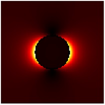

Electric field maps
Electromagnetic field maps can be computed either by using Green function objects or by setting up a meshfield object.
Contents
Initialization
% initialize MESHFIELD object for electromagnetic field map
emesh = meshfield( p, x, y, z, op, PropertyPair );
In the initialization, the following parameters and properties are used
- p is a comparticle object.
- x,y,z are the positions where the electromagnetic fields should be computed. They can be created with the Matlab meshgrid command, in which case only two of the x,y,z arrays must be of equal size while the third one can be a scalar or vector, or x, y and z can all have the same size.
- 'mindist' and 'medium' are parameters to be passed to compoint when placing the points into the dielectric environment of p.
- 'nmax' is a parameter that allows to work off the field map for large field of view matrices x,y,z. This may be necessary when these matrices are too large to set up the entire Green function matrix at once.
- op additional MNPBEM options are passed to the Green function connecting particle p and positions (x,y,z).
- 'waitbar' controls whether the progress of the work-off evaluation is reported through a waitbar.
Methods
Once the meshfield object is initialized, one can compute the field maps for a given surface charge distribution according to
% compute induced electromagnetic fields [ e, h ] = emesh( sig ); % compute for excitation object EXC of type PLANEWAVE or DIPOLE the fields [ e, h ] = emesh( exc.field( p, enei ) );
The field maps e and h have the same leading dimensions as the position mesh, and the third dimension is 3.
Example
In the following example we show how to compute an electric field map for a nanosphere illuminated by a plane wave
% BEM options op = bemoptions( 'sim', 'stat' ); % make gold nanosphere p = comparticle( { epsconst( 1 ), epstable( 'gold.dat' ) }, { trisphere( 144, 10 ) }, [ 2, 1 ], 1, op ); % plane wave excitation exc = planewave( [ 1, 0, 0 ], [ 0, 0, 1 ], op ); % set up BEM solver bem = bemsolver( p, op ); % compute surface charge sig = bem \ exc( p, 500 ); % positions where fields are computed [ x, y ] = meshgrid( linspace( -15, 15, 101 ) ); % set up MESHFIELD object emesh = meshfield( p, x, y, 0, op, 'mindist', 0.2, 'nmax', 3000, 'waitbar', 1 ); % compute field map e = emesh( sig ) + emesh( exc.field( emesh.pt, sig.enei ) ); % final plot imagesc( dot( e, e, 3 ) ); axis equal off colormap hot( 255 );

Copyright 2017 Ulrich Hohenester